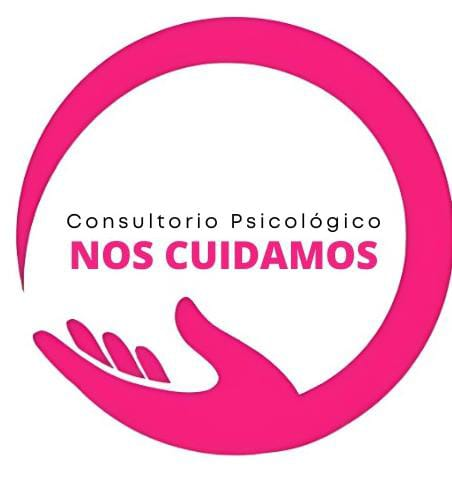
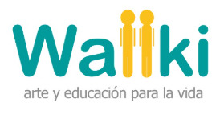

Nuestro Equipo
Somos un equipo dedicado a la capacitación y divulgación científica en psicología. Descubre quiénes formamos parte de MetaPsy Tinkuy.
Giuliano Milla Segovia
Psicólogo Clínico
Especialista en Psicología Clínica, Psicoterapeuta y Facilitador de la Ciencia
Rodrigo Bravo Ruiz
Filósofo
Logoterapeuta y experto en el análisis crítico aplicado a la psicoterapia
Yamile Olivas Arana
Maestra en Artes Visuales
Arteterapeuta y Especialista en Diseño de Proyectos de Aprendizaje Interdisciplinarios
Aquí podrías estar tú
Únete a nuestro equipo y aporta tu talento y pasión
Aliados:

